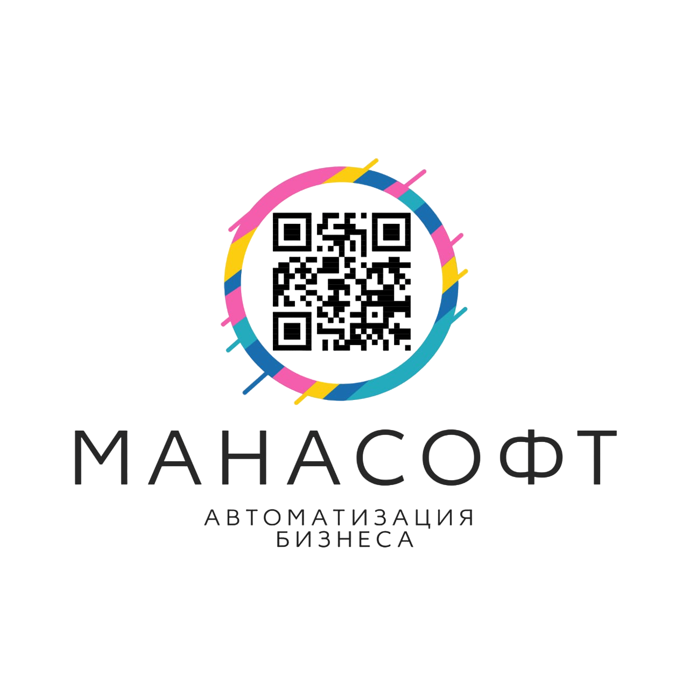

Начинаем с процессов
Изучаем текущий учёт, роли сотрудников и задачи бизнеса. Подбираем конфигурацию и определяем, какие изменения действительно необходимы.

Превращаем типовую программу в рабочий инструмент вашей компании. Запускаем 1С, переносим данные, адаптируем систему и обучаем пользователей.
Изучаем текущий учёт, роли сотрудников и задачи бизнеса. Подбираем конфигурацию и определяем, какие изменения действительно необходимы.
Переносим начальные данные из прежних систем, настраиваем справочники, права доступа и необходимые интеграции. Проверяем сценарии работы до запуска.
Создаём отчёты, изменяем формы, автоматизируем операции и настраиваем обмен с другими системами. Стоимость доработки — от 4 800 ₽/час.
Обучаем сотрудников работе в программе и помогаем пройти первые рабочие операции. После запуска доступно сопровождение.
Определим объём работ, сроки и стоимость до начала проекта.
Обсудить проект ↗Подобрать программу ↗Расскажите, что хотите улучшить.
Поможем определить следующий шаг.